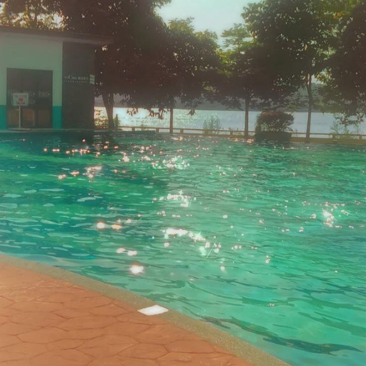

Explore a collection of images captured on random days, showcasing a variety of perspectives and moments. Each photo reflects a unique story, offering a glimpse into everyday life through a creative lens.
Clear blue water with sunlight making it sparkle, looking calm and beautiful. Captured at A'Famosa Water Theme Park.
Bare tree branches standing against a dark evening sky, peaceful and quiet. Photographed at residential park during sunset.
Warm sunlight shining through a window, making cool shadows on the wooden table. This picture was taken at Kolej Kediaman Siswi.
A green path surrounded by trees, glowing in soft golden light, feeling calm and fresh. This picture was taken in my hometown.
A busy walkway at night with bright lights and a lively, blurred scene. Taken at a station bus.
Raindrops fall softly, tracing patterns on the surface below. Captured during a quiet drive to the village.
A stunning sunset with golden clouds and dark shapes of power lines, peaceful and pretty.
A vibrant flower in full bloom, captured in the neighbor's garden, radiating freshness and charm.

A serene pool at a hotel, reflecting the soft light of the surroundings, offering a peaceful and relaxing vibe.
The sound of the sea with the sunset, it's totally a therapy. The video was taken at Pantai Remis.